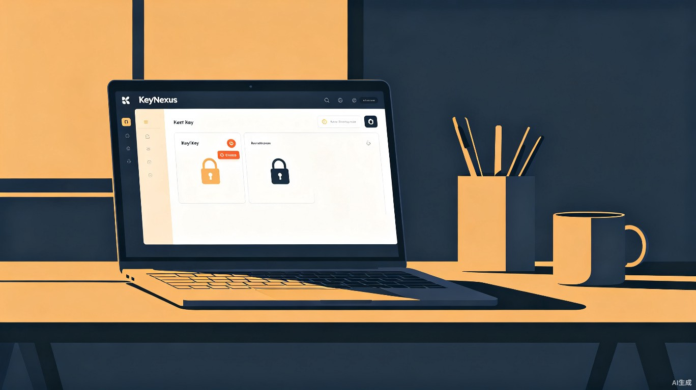

KeyNexus 智钥管家
专为多 LLM 开发者设计的极致轻量级本地密钥管理工具，让 API 凭证管理化繁为简
KeyNexus 智钥管家
在 AI 开发者日常工作中，管理多个 LLM 平台的 API Key、Token 余额、优惠截止日期和登录凭证是一项高频但被忽视的痛点。开发者需要在 OpenAI、Anthropic、Gemini、DeepSeek 以及各类第三方代理之间频繁切换，却缺乏一个集中、安全、低噪音的管理工具。
KeyNexus 以系统托盘常驻的极简形态运行，提供"记录-提醒-行动"闭环：安全存储所有 API 凭证，智能扫描到期与用量风险，并通过桌面通知和一键操作面板帮助开发者快速响应，彻底告别凭证管理的混乱。
谁需要 KeyNexus？
核心用户群体是同时使用多个 LLM 服务的开发者，包括独立开发者、AI 创业团队技术成员、以及 AI 学习者和研究者。
功能架构
本地加密密钥库
AES-256-GCM 加密存储所有 API Key、账号密码与 Token 余额，支持分类标签筛选，数据不出本机。
智能预警中心
每日自动扫描 Key 有效期、Token 用量与优惠截止日期，通过桌面通知按优先级推送提醒。
一键操作面板
一键复制 Key 到剪贴板、一键跳转官网登录页、安全展示账号密码，最小化操作步骤。
数据概览仪表盘
按紧急程度排序的简洁列表视图，一眼掌握所有凭证状态，支持快速编辑和删除。
灵活数据录入
手动或半自动（剪贴板导入）录入 Key、Token、截止日期与备注，支持自由备注字段。
自定义提醒阈值
不同类别 Key 可设置不同的提前提醒天数与用量阈值，精确匹配个人节奏。
为什么 KeyNexus 有价值？
效率价值：开发者无需在多个工具和笔记间翻找 Key，通过托盘图标和桌面通知即可完成"查看-复制-登录"全流程，每次操作节省 1-3 分钟，日均减少 10+ 次无效操作。
经济价值：智能提醒机制有效避免 Token 过期清零和优惠活动遗漏。对于使用预付费模式的开发者，每张 Key 的有效利用直接转化为真金白银的节省。
安全价值：AES-256-GCM 本地加密 + 零网络传输，比浏览器自动填充、明文记事本、聊天记录存储等常见方案更安全，避免凭证泄露风险。
Tauri + Rust + Vue.js
选择 Tauri 2.0 替代 Electron，实现极致轻便（安装包 <10MB）与低内存占用。Rust 后端提供内存安全与高性能加密能力，Vue.js 前端构建简洁仪表盘界面。
| 组件 | 技术选型 | 用途 |
|---|---|---|
| 应用壳 | Tauri 2.0 | 跨平台桌面应用，资源占用远低于 Electron |
| 后端语言 | Rust | 核心逻辑，内存安全，高性能 |
| 加密库 | ring | AES-256-GCM 加密存储敏感数据 |
| 数据库 | SQLite (sqlx) | 异步 ORM，轻量级本地存储 |
| 前端框架 | Vue 3 | 构建简洁用户界面 |
| UI 组件 | Naive UI | 高质量 Vue 3 组件库 |
| 通知系统 | tauri-plugin-notification | 系统级桌面通知 |
| 定时任务 | tokio-cron-scheduler | 每日扫描与提醒 |
核心工作流
分阶段开发路线
MVP 最小可行产品
搭建 Tauri 项目骨架，实现 SQLite 本地加密存储、基础 CRUD UI、系统托盘常驻与基础通知功能。
智能化与集成
实现一键复制 / 一键跳转、复杂到期用量查询、每日定时扫描与优先级排序、提醒去重策略。
打磨与安全加固
完善 UI 交互细节（拖拽排序、批量操作）、增加生物识别解锁（Windows DPAPI）、测试与打包发布。